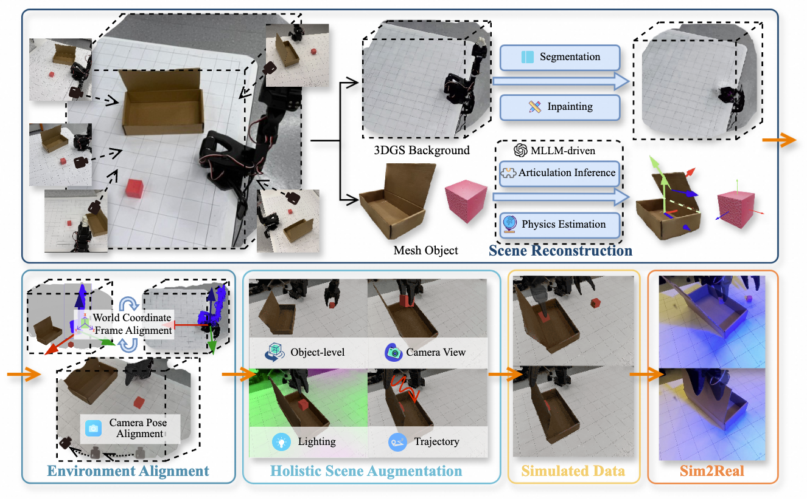
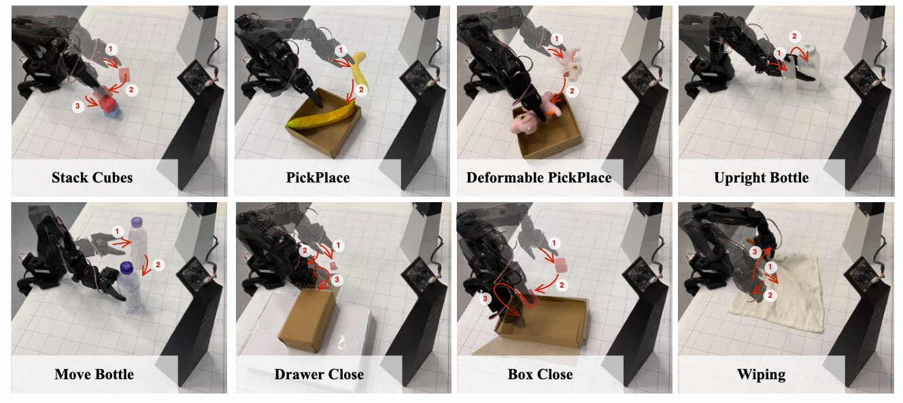
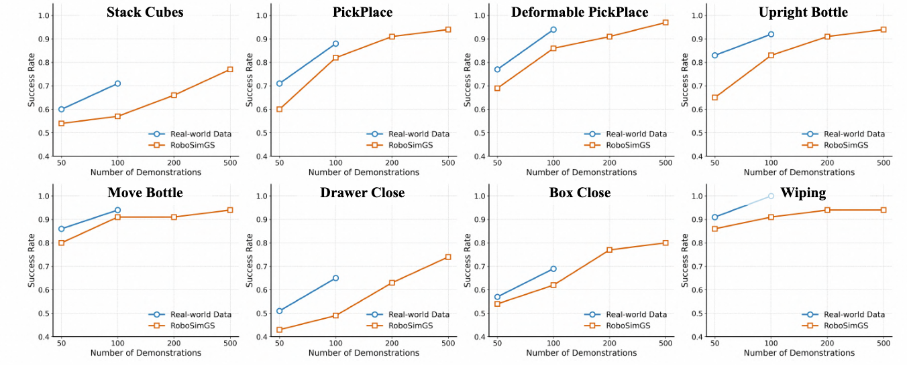

The scalability of robotic learning is fundamentally bottlenecked by the significant cost and labor of real-world data collection. While simulated data offers a scalable alternative, it often fails to generalize to the real world due to significant gaps in visual appearance, physical properties, and object interactions. To address this, we propose RoboSimGS, a novel Real2Sim2Real framework that converts multi-view real-world images into scalable, high-fidelity, and physically interactive simulation environments for robotic manipulation. Our approach reconstructs scenes using a hybrid representation: 3D Gaussian Splatting (3DGS) captures the photorealistic appearance of the environment, while mesh primitives for interactive objects ensure accurate physics simulation. Crucially, we pioneer the use of a Multi-modal Large Language Model (MLLM) to automate the creation of physically plausible, articulated assets. The MLLM analyzes visual data to infer not only physical properties (e.g., density, stiffness) but also complex kinematic structures (e.g., hinges, sliding rails) of objects. We demonstrate that policies trained entirely on data generated by RoboSimGS achieve successful zero-shot sim-to-real transfer across a diverse set of real-world manipulation tasks. Furthermore, data from RoboSimGS significantly enhances the performance and generalization capabilities of SOTA methods. Our results validate RoboSimGS as a powerful and scalable solution for bridging the sim-to-real gap.


We compare the real-world performance of policies trained on varying amounts of real data (50, 100 demonstrations) versus those trained exclusively on our simulated data (50 to 500 demonstrations). The policy trained on just 200 of demonstrations by RoboSimGS achieves performance comparable to one trained on 100 real-world demonstrations.

@article{zhao2024hfgs,
title={Towards Affordance-Aware Robotic Dexterous Grasping with Human-like Priors},
author = {Zhao, Haoyu and Zhuang, Linghao and Zhao, Xingyue and Zeng, Cheng and Xu, Haoran and Jiang, Yuming and Cen, Jun and Wang, Kexiang and Guo, Jiayan and Huang, Siteng and Li, Xin and Zhao, Deli and Zou, Hua},
journal={arXiv preprint arXiv:2508.08896},
year={2025}
}